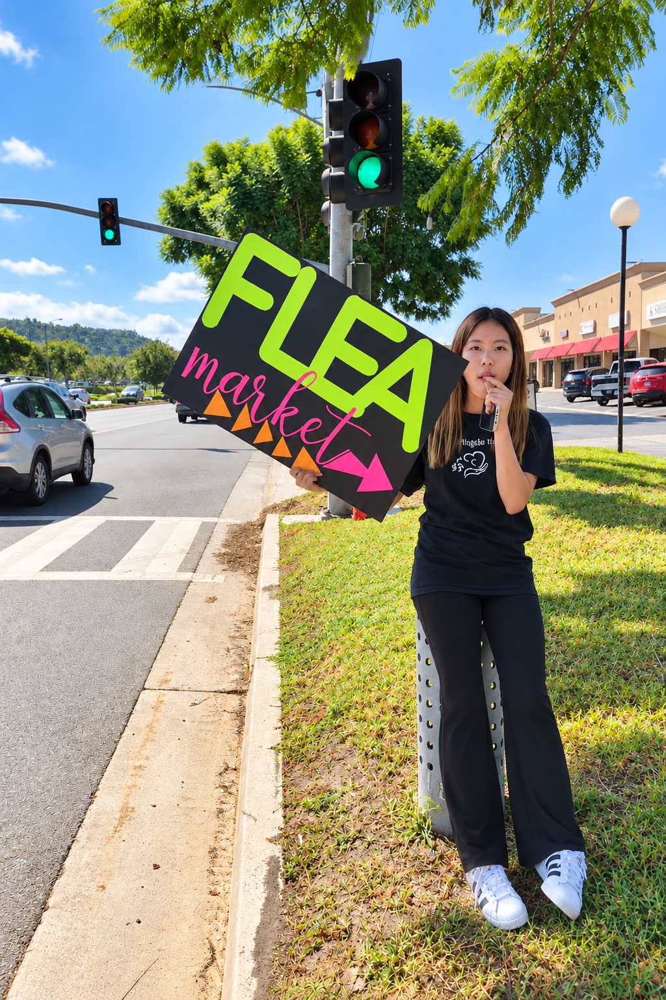
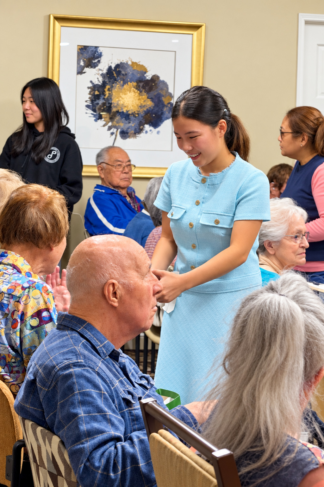
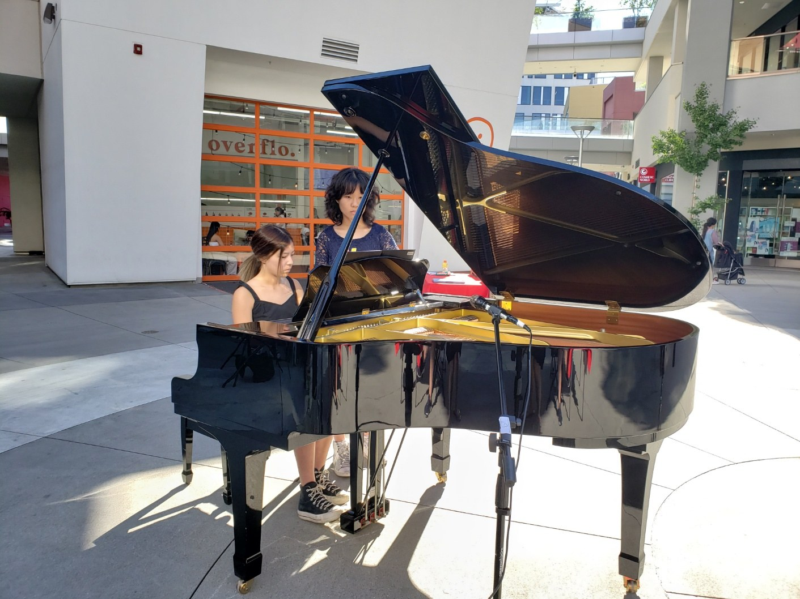

Flea Market Fundraiser
Planning and promoting our annual flea market.
At Music Angels Hands, a nonprofit organization, I help plan community programs, organize free concerts, and promote fundraisers such as our annual flea market. Piano has become one way I can serve—sharing music with people in the community while helping our group raise more than $11,000 for CHOC, Ronald McDonald House, and UCI. I also play for seniors at Emerald Court and for patients and families at St. Jude Medical Center.

Planning and promoting our annual flea market.

Connecting with seniors beyond the performance.

Free concerts, including a staged production at Curtis Theatre that sold out all 199 seats two years running.